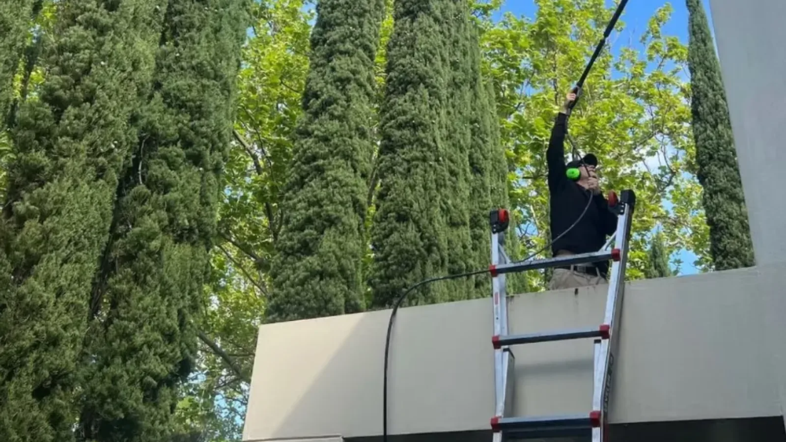
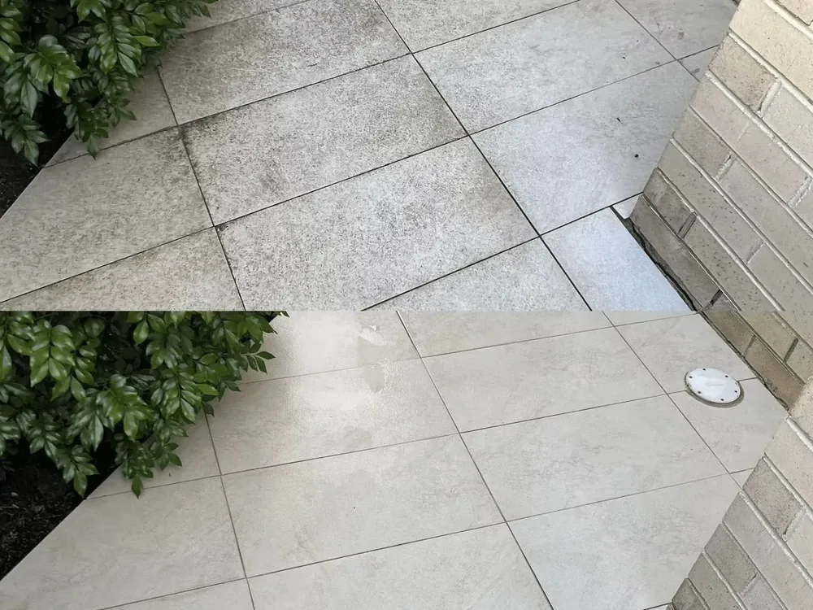
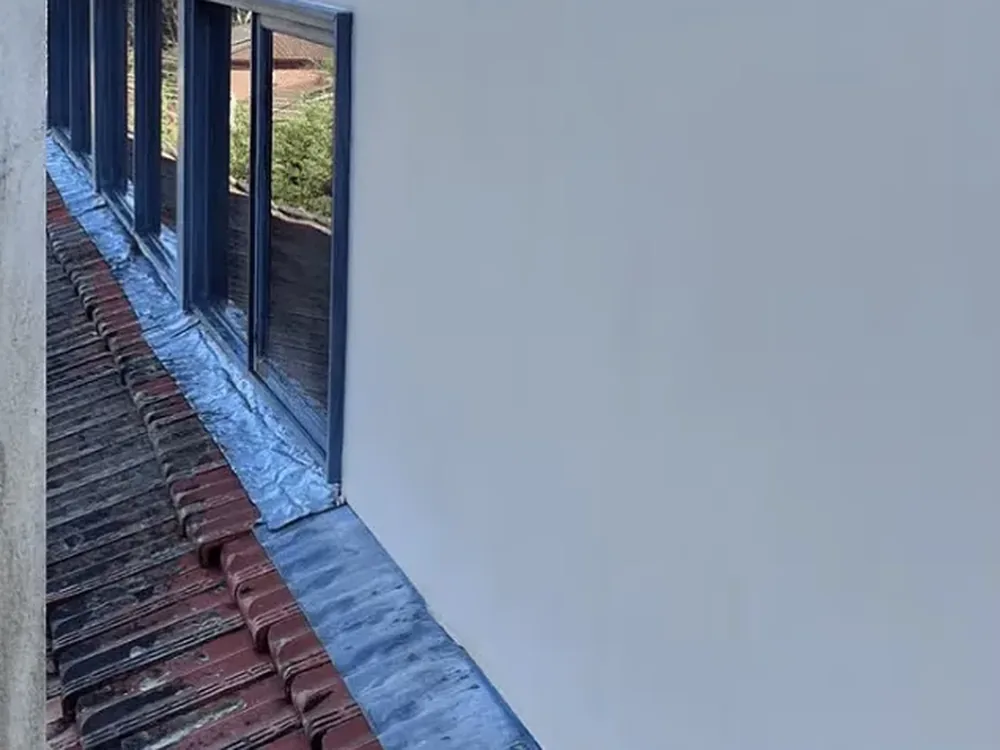
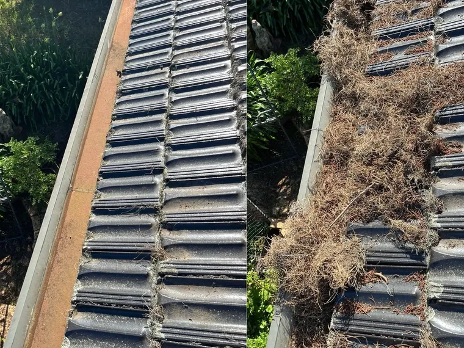
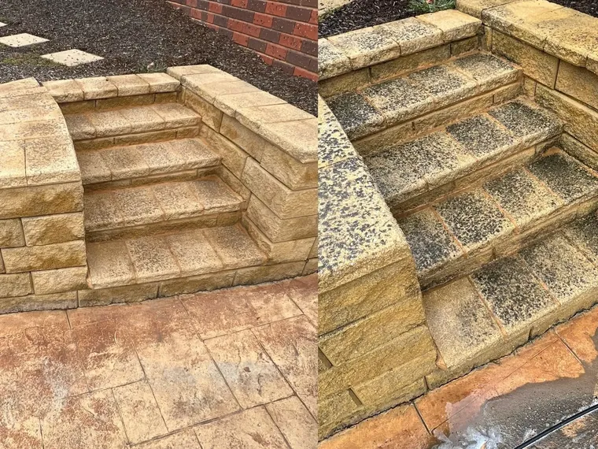
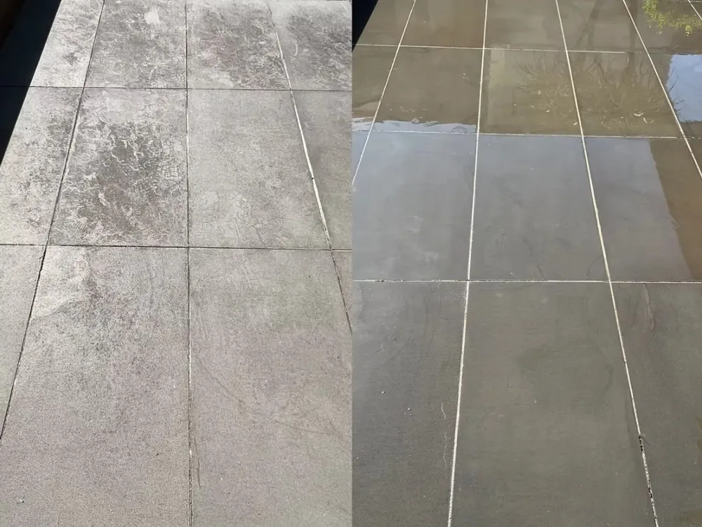
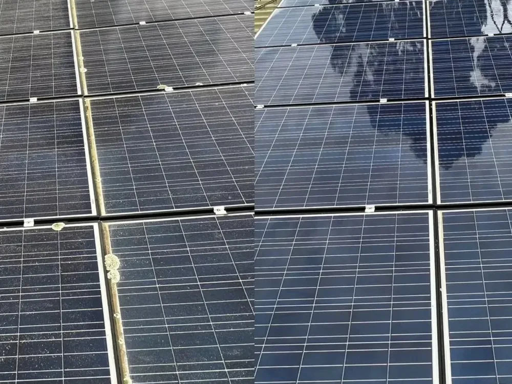
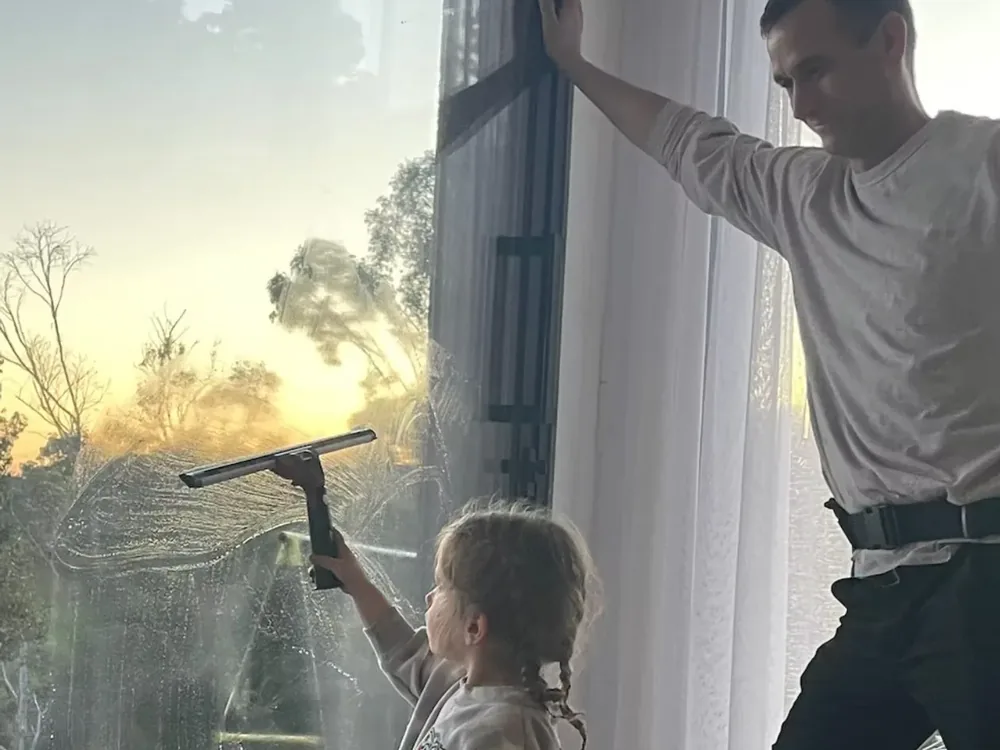
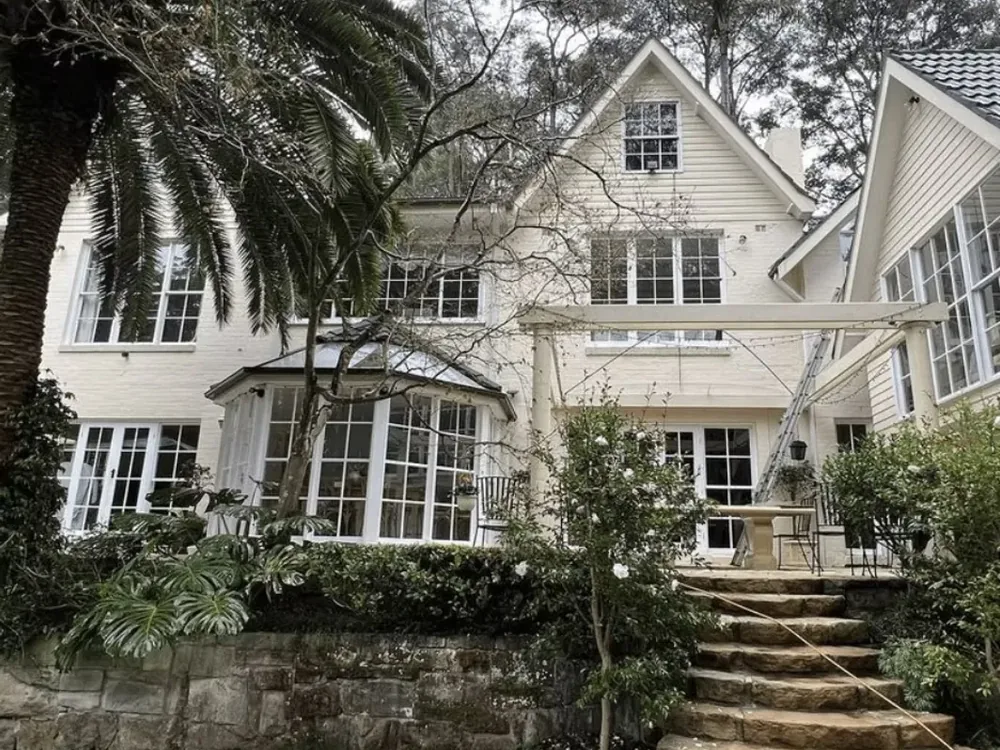

Not sure what you need?
Tell us about your property and we'll recommend the right clean — and bundle services to save you money.
Get a free quote
Melbourne's Eastern Suburbs
Streak-free windows, safely cleared gutters, and spotless driveways and rooflines. Stan The Man Cleaning is your fully insured, locally owned exterior cleaning team across Melbourne's Eastern Suburbs.
Exterior cleaning specialists
Your home is one of your biggest investments — and grimy windows, blocked gutters and dirty exterior surfaces let it down. Stan The Man Cleaning brings the equipment, the know-how and the attention to detail to make every surface look its best.
Founded and run by Stan Krejnus, Stan The Man Cleaning is a genuinely local business based in Donvale, servicing homes and businesses right across Melbourne's Eastern Suburbs. We're not a faceless franchise — when you book with us, you deal directly with an owner-operator who takes real pride in the work and treats your property like it's our own.
From crystal-clear windows and safely cleared gutters to pressure-washed driveways, gently soft-washed rooflines and output-restoring solar panel cleans, we cover the full range of exterior cleaning under one trusted, fully insured roof. One phone call handles the lot — no juggling multiple tradies, no chasing quotes, no fuss.
Every job starts with an honest, upfront quote and ends with a finish we're proud to put our name to. We turn up on time, use professional-grade equipment, and leave your property tidy — because the little things are what turn a one-off clean into a customer for life.
Our services
Whether it's a one-off spring clean or regular maintenance, we tailor every job to your property. Explore what we do below.

Streak-free windows inside and out — frames, tracks, sills and flyscreens — with purified water for a lasting shine.
Window cleaning Melbourne
We safely clear leaves and debris, flush downpipes and leave your gutters flowing freely — protecting your home.
Gutter cleaning Melbourne
Driveways, paths and patios restored. High-pressure cleaning lifts years of grime, moss, oil and algae in one visit.
Pressure washing Melbourne
A gentle, low-pressure wash that safely removes mould, mildew and algae from render, cladding and rooflines.
Soft washing Melbourne
Dust and grime rob panels of efficiency. Our safe, streak-free clean helps restore lost output and protect your investment.
Solar panel cleaning MelbourneTell us about your property and we'll recommend the right clean — and bundle services to save you money.
Get a free quoteReal results
A few before-and-afters from real properties across Melbourne's Eastern Suburbs. This is the standard of finish you can expect.






Why choose us
We built our reputation on turning up when we say we will, doing the job thoroughly, and leaving your property better than we found it. No shortcuts, no surprises on the invoice — just consistent, quality work you can rely on, backed by real local accountability. Here's what you can count on every time.
Public liability cover and proper height-safety equipment on every job — total peace of mind.
We respect your schedule with punctual arrivals and clear communication from quote to completion.
You deal directly with Stan — no call centres, no rushed sub-contractors, just meticulous work.
Clear quotes with no hidden fees. You'll know exactly what you're paying before we start.

Simple process
Call, text or fill in our quick form. Tell us what you need and we'll give you clear, upfront pricing — no obligation.
We lock in a convenient appointment and confirm the details, so you always know exactly when we'll arrive.
We turn up on time, do the job thoroughly and tidy up after ourselves — leaving your property looking its best.
Where we work
Stan The Man Cleaning provides professional window cleaning, gutter cleaning, pressure washing and solar panel cleaning across all of Melbourne's Eastern Suburbs. Based in Donvale, we cover a wide area — so wherever you are in the east, we've got you covered.
Exterior cleaning done right
Homes across Melbourne's east face a very particular set of challenges. Leafy, tree-lined streets in suburbs like Donvale, Templestowe and Warrandyte mean gutters fill quickly with leaves and bark, especially through autumn and ahead of winter storms. Cool, damp winters leave paths, driveways and north-facing render coated in slippery green algae and mould. And long, dusty summers gradually dull windows and coat solar panels in a film that quietly eats into their output.
We understand these local conditions because we live and work here. That means we know when your gutters are most likely to overflow, why your render grows grimy on the shaded side, and how much power your solar system can lose to a season of dust. Every clean we do is tailored to the property in front of us — the right method, the right pressure, and the right timing to keep your home protected and looking its best all year round.
Instead of chasing separate tradies for windows, gutters, driveways and panels, you get everything handled by one reliable, fully insured local. Bundling services into a single visit saves you money and time — and gives your whole property a co-ordinated refresh rather than a patchwork of odd jobs. Whether you need a one-off spring clean before guests arrive, regular maintenance to protect your investment, or a pre-sale spruce-up to lift your home's kerb appeal, we've got you covered.
Best of all, getting started couldn't be easier. There's no obligation and no pushy sales — just a friendly local who'll listen to what you need, give you a fair and transparent price, and get the job done properly. It's the kind of straightforward, dependable service that's becoming harder to find, and it's exactly what we've built our reputation on.

What locals say
"Stan did our windows inside and out and they've never looked better. Punctual, professional and great value. Highly recommend."
"Booked a gutter clean and pressure wash together. The driveway looks brand new and the whole job was hassle-free. Will use again."
"Fantastic local business. Reliable, tidy and clearly takes pride in the work. Our solar panels are spotless and the house looks amazing."
Reviews shown are representative. Connect your Google & Facebook reviews before launch — see README.
Questions & answers
Ready when you are
Give your home the clean it deserves. Call Stan directly or send through your details and we'll get straight back to you.